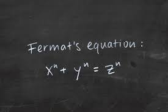
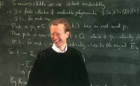
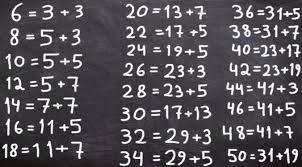
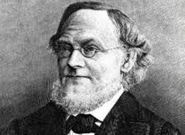
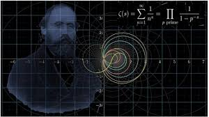
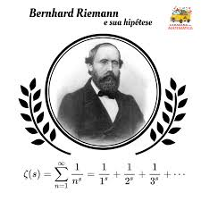
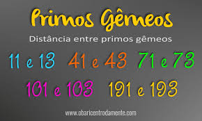
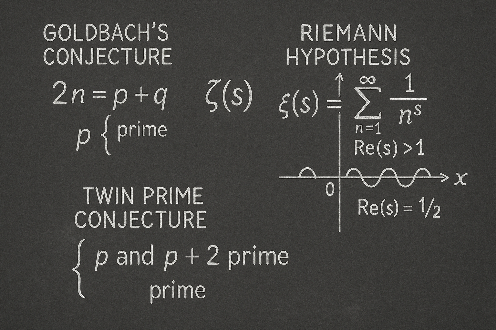

A matemática sempre foi um campo de conhecimento em constante evolução, enfrentando desafios que exigem raciocínio lógico, criatividade e persistência. Desde os tempos antigos, matemáticos se debruçaram sobre problemas que pareciam impossíveis de resolver. Muitos desses desafios, após décadas ou até séculos, foram finalmente compreendidos ou solucionados, revelando novas possibilidades para a ciência e a tecnologia. A história da matemática é marcada por uma alternância entre mistérios solucionados e novos enigmas que continuam a desafiar a mente humana.
Um exemplo notável de problema resolvido é o Último Teorema de Fermat. Formulado no século XVII, ele afirmava que não existem três números inteiros positivos que satisfazem a equação a^n + b^n = c^n para n > 2. Por mais de 350 anos, essa simples afirmação intrigou matemáticos de todo o mundo. Foi apenas em 1994 que Andrew Wiles conseguiu provar o teorema, utilizando ferramentas modernas da teoria dos números e da geometria algébrica. Outro exemplo é o desenvolvimento do cálculo, que no início foi altamente controverso, mas hoje é uma ferramenta essencial em áreas como engenharia, física e economia.
 
Por outro lado, vários problemas continuam sem solução, desafiando até os maiores especialistas do mundo. Um desses é a Conjectura de Goldbach, proposta em 1742, que afirma que todo número par maior que dois pode ser escrito como a soma de dois números primos. Apesar de ter sido testada com sucesso para trilhões de números, uma prova geral ainda não foi encontrada. Isso demonstra como uma afirmação simples pode esconder uma profundidade matemática surpreendente.
 Outro exemplo famoso é a Hipótese de Riemann, apresentada em 1859 por Bernhard Riemann. Ela está relacionada à distribuição dos números primos e afirma que todos os zeros não-triviais da chamada função zeta de Riemann têm parte real igual a ½. A resolução dessa hipótese tem implicações profundas na teoria dos números e até mesmo na segurança de sistemas de criptografia. Apesar dos enormes avanços na matemática moderna, a hipótese permanece uma das maiores incógnitas da matemática.
 Também merece destaque a Conjectura dos Números Primos Gêmeos, que propõe que existem infinitos pares de números primos com uma diferença de apenas dois, como (11, 13) ou (41, 43). Embora se saiba que tais pares existem em grande quantidade, provar que há infinitamente muitos ainda é um objetivo não alcançado. Esses problemas em aberto mostram que, embora a matemática tenha superado grandes barreiras no passado, ela continua sendo uma fronteira de exploração intelectual, repleta de desafios fascinantes e descobertas por fazer.
Se você se interessou pelos desafios matemáticos ainda sem solução e deseja entender melhor sua importância e complexidade, pode acessar informações mais detalhadas sobre cada um deles no menu. Lá, você encontrará explicações aprofundadas sobre a Conjectura de Goldbach, a Hipótese de Riemann e a Conjectura dos Primos Gêmeos, com seus contextos históricos, tentativas de resolução e implicações na matemática moderna. Esses temas, além de instigantes, mostram como a matemática continua viva e cheia de mistérios a serem desvendados. Ao final da leitura você poderá testar seus conhecimentos acerca desses grandes desafios em um pequeno teste que preparei, bons estudos!
